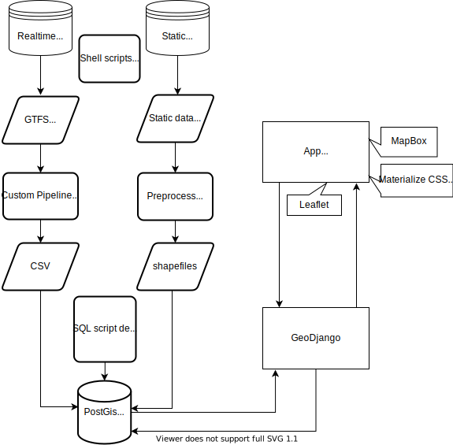

Please check the README for a in-depth overview of the project and some relevant technical details.
mta2014 has 3 related (but self-contained) uses:
Currently the application allows for visualizing and querying historical (2014) Subway trip data based on the MTA's historical archive. Historical data instead of current live data is used as a means to build a prototype on static data before rolling out a live version.
As it turned out, live data for the MTA (and for transit systems in general) - follows a protocol called GTFS Realtime. While this specification is very useful for providing realtime updates (such as on https://new.mta.info/ and on station platforms), it is not easily convertable to a tabular format (such as a csv) for analysis. The feed, which is updated every 15 seconds, consists of several components and extracting deduplicated but complete data was non-trivial.
This necessitaed building an ETL pipeline that extracts the original feed and into PostgreSQL database. Along the way, I decided to expand the project to include a visualization tool, as well as allowing others to query the database directly. I believe the latter utility could be quite valuable to researchers, allowing them to use the data in a familiar ready-to-use format.
When the project was first conceived, the mta developer portal only provided historical data for a few months (and only some subway lines) in 2014. Later I decided to continue using static data in order to build the core of the application before building a live data pipeline.
A top level sketch of the project shows two main coponents: An ETL pipeline that feeds a PostGIS Database, and a Django app that serves data to the web page. 
MTA2014 uses historical NYC Subway data from 2014. This historical data is a repository of raw Subway perormance updates. These updates are the same updates used by the MTA to publish its performance metrics. These are the same live updates used to publish arrival times on Subway platforms and the MTA's website, https://new.mta.info/. All these updates are available in a format called GTFS Realtime. This feed specification is designed for public transportation agencies to provide live systemwide updates about their fleets. While this format is conducive for its stated task, it does not lend itself to reconstructing a histroical record for the past, let alone for systematic analysis. My application does just that. I chose to work on historical data from 2014 due to the raw data's availability (see README), which allows anyone to reproduce my work from scratch as documented there. Once the 2014 version of the project is developed, a live version based on recent and live data will be launched.While the initial motivation was to process the data for analysis, the ETL process from GTFS-realtime format to a SQL DB inspired me to create a front end for the application that allows for visualizing the Subway updates on a interactive map. This step is now complete. The next step is dual